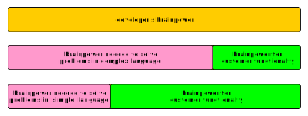

2025 and beyond (2025-04-24 by Bas vd Berg)
A lot of work has happened on the C2 compiler in the past year! It now support more targets:
- Linux (x86_64)
- Darwin (x86_64)
- Darwin (arm64)
- FreeBSD (x86_64)
- OpenBSD (x86_64)
A selection of some of the other changes:
- Many bugfixes
- Parser optimizations (using less memory and being even faster)
- Switch now supports strings (sswitch has been removed)
- Work has started on a custom back-end
For the comping period, a few syntax changes are on the horizon. These are mainly minor anti-patterns
that we see appear in C2 code. Also the new back-end will take a lot of time, but working on this is
a lot of fun!. The goal of the new back-end is to have very fast builds that have a reasonable level
of optimization.
If you want to participate or follow the discussions, see the Github archive.
Another problem solved.. (2023-09-10 by Bas vd Berg)
One of the big changes between C and C2 is
macros. C has them, C2 doesn't. Also every C program larger than Hello World
seems to need them. Replacing macros with something else is not trivial. Macro functionality can be split up in several areas:
- Constants
- Feature Selection
- Generics
- Code reuse
Constants Constant macros are easily replaced by normal constants.
Feature Selection Looks the same, works similar
Generics Replaced by template functions and structs in C2.
Code reuse Hard to replace. Consider C:
#define LOG(x) log(__FILE__, __LINE__, x)
Until now, C2 had to alternative for this, but with
Auto-arguments this can be replaced by an
even better mechanism. Please see the
Github Examples unit-test example.
A Year later (2023-05-24 by Bas vd Berg)
A little more than a year ago, I started to re-implement the C2 compiler in C2 itself. At
Fosdem 2023 I gave a presentation about it. Now c2c-native (as opposed to c2c-cpp)
supports more than 900 unit tests, can self-compile and is generally usable. It was also the graduation test
for the C2 language as far as I'm concerned. I find it really smooth to program: it gives you the power of C,
but removes the sharp edges and generally speeds up development. C2c-native is also blindingly fast: parsing 35K
lines of C2 code takes around 12ms. Analysing it takes less than 6ms. This allows editor plugins that check while you type.
c2c-native also supports something c2c-cpp does not: template-functions.
The next things that I will be adding are:
- Struct Templates Template structs with struct functions
- ASM re-add ASM support for embedded/bare-metal targets
- Tooling more editor plugins
Another thing I (re-)experienced while implementing the c2c-native is the
brainpower-factor:

The concept of this is simple:
when programming a developer has to divide his/her brain-power between the problem-domain and
the solution-domain.
The problem-domain contains the tools you use to solve the problem. The solution-domain is the actual thing
you are trying to implement/solve for your customer. So the more brainpower you use for one domain, the less
is left for the other domain.
I notice this a lot when programming in C++: You're constantly busy thinking about design patters, class
hierarchies, template use etc. A
LOT less brainpower is left to solve the actual problem. In a language
like C or C2, the language offers you basic constructs to work with, so you're much more focused on solving
the actual problem: a higher development speed. The idea that a
higher-level language makes development
faster only works for a 'lot-higher' languages like Python, not for C++/Rust that aren't really a lot 'higher'.
Do not underestimate the power of a 'simple' language.
The next step.. (2022-11-13 by Bas vd Berg)
C2 is designed for creating kernels, bootloaders, webservers, compilers and other low-level/high-performance applications
that you would currently use C(or C++) for. In the trend of 'eat your own dog food', I decided to re-write the C2 compiler
(written in C++) in C2. This has been a fun project! Running into some small bugs in the original compiler since it was the
largest C2 project so far (140 files, around 25K lines of code) did not lessen the fun. I'm very happy with the result. The
original C++ based compiler was 6.9 Mb since it used some Clang components and statically linked LLVM. The new compiler is
only 200 Kb and has almost the same front-end functionality. Speed-wise, the original compiler parser + analyser around
1 million lines/second. The new one over 2 million lines/second. The diagnostics messages are the same.
I am very content with how C2 came together, it feels very smooth to program in and the struct-functions make the
code much more concise. Also it's blindingly fast. If you are looking for something newer than C/C++, give it a try..
Library management (2020-02-14 by Bas vd Berg)
C has only very limited library support: You add some search paths for header-files, include some header files, and link to static or
dynamic libraries. These steps are all separate. If you call library functions without linking
to them, you can undefined references. C2 has fixed this by making library usage a single
atomic thing. You use the library or you dont. Additionally C2 now supports source libraries.
These are libraries that are used in source (=C2) form. This allows better inlining and
optimizations, especially when using many 'simple' functions that just return a member of
an opaque struct for example. Also it allows developers to organize their code archives in
a much easier way.
C2 also distinguishes different roles: developers create the code
and builders build it. Usually developers create the recipe.txt file, while
the builders create the build.toml file. This also allows for a very nice integration
into more complex build tools like buildroot or yocto.
Give it a try!
inline ASM (2018-10-02 by Bas vd Berg)
After a period without any big feature additions, C2 now supports inline ASM! Since
C2 is targetted for embedded systems and low-level programming among others; supporting
inline ASM was a real must. For more info see
the C2 documentation.
Features still missing are
semantic macro support and many smaller syntax
improvements (like a proper
cast syntax). However it's already possible to write quite
a lot of programs with C2. The
C2 examples archive
on Github shows some examples.
Vulkan example (2017-01-02 by Bas vd Berg)
What would be a cooler way to show off the C2 library system that to port a Vulkan
example application that has 3D graphics!? For those unfamiliar with Vulkan, check
the
Vulkan website.
The Vulkan API comes with a header of some 3775 lines of C code. The
vulkan_example branch on GitHub shows the C2 port (in c2libs/vulkan) and the
example application (in vulkan_example/) using some 2300 lines of code. Porting this
example gave me lots of experience in how C2 would feel. So far, I'm very happy.
NEW Feature! struct-functions (2016-08-11 by Bas vd Berg)
One of the best things of working on a new programming language is to add a
completely new feature. That pleasure was mine when I added
struct-functions.
Struct functions or more accurately struct-function calls, make C2 more readable.
We also managed to add this feature while keeping true to the C2 spirit of
define once.
For more info, please refer to the
c2lang.org documentation.
Guess what... rebased again: LLVM/Clang 3.8 (2016-05-03 by Bas vd Berg)
The latest improvements of LLVM/Clang 3.8 are now also available for C2! The rebase
was relatively easy, since C2 makes only the minimal amount of surgical changes to
Clang (exactly for this reason..). The only issue that took time was the removal
of an implicit cast in an Clang iterator type. The errors that gave were very hard
to decypher, but luckily the ChangeLog have a hint in the right direction.
YAR (Yet Another Rebase) LLVM/Clang 3.7 (2015-11-30 by Bas vd Berg)
The first version of C2 was based on LLVM/Clang 3.2. To keep in sync with this
great codebase, C2 has been rebased on the latest version: 3.7. Again the changes
required were limited. The only real issue was some IR code change. When fetching
the latest version of C2, please follow the INSTALL.md document for instructions.
I would also like to thank the LLVM/Clang guys for some great tooling!
Update: standard C library support (2015-11-18 by Bas vd Berg)
After a lot of discussions, brainstorming and implementation, C2C now supports
the standard C library. This feature is the first in a series that will grow to
full C library support and C2 library support! Since C2 doesn't use the header-#include
mechanism, support of libraries had to be re-throught. The full solution is described
under
Documentation.
First tooling: c2tags (2015-10-18 by Bas vd Berg)
This summer C2 had a brief appearance on
Hacker News.
One comment was that with a new language, you lose existing tooling. In my opinion,
one problem of C/C++ is the existence of good tooling, since the language makes writing
tools quite hard. During programming you only need a few main language tools besides
the compiler and editor:
- indexer (eg. ctags/cscope) to be able to 'jump to definition'
- formatter (eg. astyle) to format the code
- navigator to quickly navigate sources
- checkers to perform extra checks the compiler lacks (eg. cppcheck, lint, etc)
So I'm very pround to finally introduce
c2tags. This tool allows editors to easily
jump to definition.
c2tags reads a
refs file that can be generated by the c2compiler. Since it's
generated by the compiler itself, it is complete and correct.
c2tags is supplemented by a small Vim config-fragment to be usable. Since the
compiler is
smart, the matching doesn't have to be done by string matching to
find a real match, but simply asking the compiler where a reference points to.
For the next part, I'm working on a
refactor engine, that allows smart-renaming and
moving of functions/types/globals in/between files.
c2reto currently already has
the ability to show all dependencies between global declarations and files. In combination
with the refactor engine, it would allow drag-n-drop moving of global declarations. I
can't wait to see this in action!
Update: Documentation live! (2015-08-05 by Bas vd Berg)
After a period of silence, it's time for an update! Work has started on c2reto, C2's refactor tool. This
tool can be used to show the architecture of a program and do some refactoring, like renaming and
moving global declarations. The C2 intrastructure has also been rebased on LLVM/Clang 3.6 to bring
the latest in compiler building blocks. And last, but not least, C2 now has some awesome
documentation thanks to Mkdocs! It can be found under 'Documentation' on the top bar.
Third rebase (2014-11-20 by Bas vd Berg)
The C2 compilers is based both on LLVM and on Clang. This is a great platform to build a compiler on.
The first C2 compiler was based on version 3.2 of both and today marks the next step as it's now
rebased on 3.5. This brings a newer C standard and more checks. I would like to thank both the Clang
and LLVM team for their great effort!
Working on the parser (2014-07-24 by Bas vd Berg)
The C2 compiler is not fully complete yet, but some parts are finally nearing something that is almost
close to nearly done. The Parser component is one of those. With the addition of parsing of Array and
Field Designator Inits (.x = 10, [10] = 2, etc), only a few things remain, namely casts and bitfields.
Follow the discussion on the forum if you're interested.
generating dependencies (2014-05-12 by Bas vd Berg)
One advantage of having no header files, is that symbols (functions, variables, etc) are only defined in one place.
This allows tools to generate good dependencies. In language with header files, it's always the question of where to place
the dependency: the header, the c-file or both? In C2, the compiler can generate a full-dependency file. No other tools
are needed and the results can be trusted. If you're interested in some of the results, check the
forum post.
Type-system update (2014-03-15 by Bas vd Berg)
Checking types in a C-like language is not very straightforward. A lot of weird things and
a lot of decisions to make. So it took me almost 6 months to finish the update I push today.
This update of 155 patches enables the type checking system to check integer literals and
built-in types completely. Floating points and pointer stuff only has rudimentary checking, but that's a lot easier
now the basic system is in place. So hopefully that'll only take a month or so..
If you're interested in the capabilities, the best place to look is the unit-tests directory (test/)
and for discussions, check the forum.
A New Year.. (2014-01-01 by Bas vd Berg)
In a few days, the C2C GitHub archive celebrates its first birthday. Looking back at the past year,
C2C has reached some milestones:
- Parsing most of the code into the AST (Abstract Syntax Tree)
- Analyser is 70% finished, detects lots of errors (eg. unused types/struct fields)
- Compiling Hello World to LLVM IR
- Working IR generation of multi-package programs
- Working IR generation of multi-file packages
- Can generate Ansi-C code from C2 code
- Working unit-test framework for Analyser/Parser
- Re-based on LLVM/Clang 3.3
So it's definately possible to develop some C2 code and use c2c to check it. This should give
a feeling of developing in C2. Looking forward to 2014, plans include:
- More IR generation (while, for, etc)
- Support external (C/C2) libraries
- Implement generic compiler attributes
- Create c2reto graphical refactor tool
- Compile LLVM IR code into binary
I especially like the c2reto tool, since it allows drag 'n drop reordering of functions, types and variables
in and between files. It will also show dependencies between packages.
Implementing C2 (part 2) (2013-09-07 by Bas vd Berg)
Looking at the frequency of these posts, you'd think work on C2 stopped. Nothing could be
further from the truth. The Github archive is steadily growing. Most recently was the complete
rewrite of the Type system and the addition of a test framework. With these two things in place
the Parser and Semantic Analysers will definitely get more mature.
The current state is that the Parser is almost parsing the full syntax (there are just some cornercases
and some error handling left). The Analyser is detecting a lot of errors already; next on the list is
detection of unused Types/Functions/Vars and uninitialized variables.
The C-code generator is basically working, but doesn't produce correct C code a 100% of the time. The
IR code generator is still in it's infancy. The AST (abstract syntax tree) does hold all the information it
needs, so nothing is blocking there except time to implement.
If you have any ideas/questions please use the forum. Happy hacking!
Implementing C2 (2013-04-11 by Bas vd Berg)
After the Fosdem presentation, the GitHub archive got 40+ followers, so I think that
part was succesfull. I wanted to get more functionaly in as soon as possible after that.
The biggest feature that entered the stage was code analysis; checking for errors/warnings
in the code. This part really worked out well I think. It's in no way finished, but the
basis is there. I was able to re-use a lot of Clang functionality for this (Great job
guys!). Additionally there have been many minor changes (changing the package operator
from :: to . (dot), etc).
The next big thing will be type checking (eg int a = "hello";) and after that
the real code-generation can begin. I haven't looked into LLVM IR code generation beyond
a few hello-worlds, so any help translating the AST to the LLVM IR code is welcome.
If you're interested, follow the forum or the Git archive.
Preparation for FOSDEM '13 (2013-01-10 by Bas vd Berg)
My proposal for a 15 minute lightningtalk at Fosdem '13 has been accepted!
Because I want to have this website and Git archive ready by then, I have some
work to do.
I also started working even more on C2 since then. The current state of it is than it
parses almost the full syntax and translates a subset into the AST (Abstract Syntax Tree).
I just started on code generation. For those wanting to read more about the language, I've
added a PDF design document (in the top bar under Design). Hopefully my lightning-talk
will spark the interest of some fellow developers...
(more info on FOSDEM '13 can be found here)
The beginning... (2013-01-04 by Bas vd Berg)
In the beginning of June 2012, I was looking (as always) for a new pet-project. I wanted
to create my own compiler for a long time, but the effort always seemed to big and the
goal never really worthy. Then I got an idea to improve C, because I really like that
language, but found the header files bothersome. After writing some compiler mockups of
my own, I found out that parsing C is really hard. So I started playing around with
llvm/clang and suddenly, and the whole effort of writing a compiler looked much easier.
So I started modifying clang to re-use its Lexer and C2 was born.